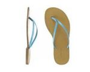

Acapulco
 De: La Frikipedia, la enciclopedia extremadamente seria.
De: La Frikipedia, la enciclopedia extremadamente seria.
| De la serie ciudades del mundo:
|
| Acapulco
|
|
|

|
| (Bandera)
|
(Escudo de armas)
|
|
| Topónimo oficial
|
Lugar donde fueron destruidos o arrasados los carrazos.
|
| País
|
México
|
| Código postal
|
69XXX
|
| Superficie
|
2 km2 de tierra y 1.984.375 km2 de agua.
|
| Altitud
|
600 metros por debajo del nivel del mar.
|
| Distancia
|
A 3 horas del DF por la Autopista del Sol y a 20 horas por la libre.
|
| Fundación
|
Cuando se descubrio el mar
|
| Población
|
Lancheros, fresas, gansitos, delfines.
|
| Gentilicio
|
Brody, Marimar
|
| Alcalde
|
Félix Salgado Macedonio
|
| Balneario favorito de los chilangos
|
«Acapulco es un mar de agua salada, una fila de palmeras, una bola de huevones y un calor de la chingada»
~ Luis Miguel Extracto de su canción más reciente
Acapulco de Juárez (Japonés: 日本国, ) es una ciudad y antigua provincia de la atlántida ubicada en el estado de Ebriedad(al cual le aportan el 99% de su producción), muy cerca de la ciudad conocida como Chilangolandia, esta es una ciudad vacacional para que todos sus visitantes puedan ir a perpetrar toda clase de excesos y perturbaciones al orden público (que igualmente cometen en su lugar de origen).
Fue descubierta por un grupo de lancheros náufragos y posteriormente conquistada y/o/u/e invadida por diversas tribus urbanas y suburbanas. Acapulco se divide en tres grandes zonas turísticas conocidas como: Acapulco para los pobres, Acapulco para el turismo sexualmente diverso y Acapulco Nais.
Historia de la creación

La historia de Acapulco y los delfines es más compleja que lo que los libros de texto han querido revelar.
Hacia el año 623 A.C. de C.V. los delfines decidieron tomar el control de la ciudad para poder crear una utopía delfínica lo cual sólo pudieron lograrlo una vez expulsados todos los humanos y controlando la mente de los nativos.
Durante cerca de 500 años todo funcionó a la perfección hasta que diversas tribus procedentes del África Subsahariana y de las alcantarillas comenzaron a poblar la periferia de la ciudad, vale la pena señalar que al principio los invasores y los delfines vivieron en paz pero todo, se derrumbó con las primeras crisis del agua potable (lo cual resulta increíble dadas las cantidades industriales de agua de mar disponibles para el consumo humano).
Para controlar a los insurrectos los delfines hicieron lo que les salió de su intelecto el cual es superior: Un simpático y bien organizado genocidio siguiendo cuidadosamente los pasos para llevar a cabo una limpieza étnica. Para mala fortuna de estos seres superiores ni a la ONU ni al Tribunal Penal Internacional para la ex Yugoslavia se les hizo muy chistoso y los cetáceos tuvieron que pagar por sus delitos contra la humanidad con trabajos forzados en el CICI y en el Mágico Mundo Marino (este último es una especie de Abu Ghraib para ellos).
Sin embargo, cuenta la profecía que:

|
Aunque estas despiadadas bestias parece ser que de momento se limitan a asesinar a humanos y violar a humanas, y no se preocupan aún de invadirnos. Muchos creen que su invasión ya ha empezado, aunque en una fase mucho mas retorcida.
|

|
| Delfín, Los Delfines y la invasión de tierra firme
|
Historia según los humanos (en 7 días)
Primer y segundo día:
En principio, Marcelo "Chelo" Ebrard decidio crear una utopía llamada Distrito Federal, esta ciudad terminó siendo una masa amorfa, sucia, contaminada, congestionada e insegura porque se construyó solo con partes pirateadas, Marcelo vió que NO era buena pero le valió madre porque le resultaba políticamente rentable y descansó al siguiente día.
Tercer día:
Ebrard dijo: Hágase el chilango en medio de está cosa a la que he nombrado Tenochtitlán Ciudad de México, obviamente al chilango no lo creó ni a su imagen ni a su semejanza porque él tiene porte europeo. Y así sucedió y descansó al siguiente día. Este fue el tercer día, porque descansó el segundo, ¿recuerdan?.
Décimo día(Eran 7 pero su creador no les enseño a contar):
Pasaron los días y los chilangos aprendieron a robarse los unos a los otros, cosa que aprendieron de su creador Ebrard ya que este les había robado, también comenzaron a ensuciar las calles, a transar a los provincianos, a graffitear paredes, hacer manifestaciones cada tercer día, amar al chilangas en el metro y en los camiones, a vender fayuca en tepito, saturar los distribuidores viales y avenidas... pero seguían siendo infelices (no es que lo hayan dejado de ser), les hacía falta algo y no era el Atlante.
Entonces, a pesar de construirles pistas de hielo, playas artificiales y segundos pisos del periférico, Ebrard decidió ir más lejos, le arrancó los huevos al Chilango, los estrelló sobre la costa del pacífico y creó la Av. Costera Miguel Alemán (Sí, fue creada por los puros huevos) para que sus creaturitas pudieran ensuciar el mar , andar en chanclas con calcetas y/o dentro del mar con pantalones (¡Hazme el chingado favor!). Vió que esto era bueno para los chilangos (no así para los Acapulqueños) y lo incluyó dentro de sus acciones en su informe de gobierno.
La ciudad en la Actualidad

Foto del Presidente Municipal aplicando su mandato
Una vez reestablecida la paz tras las guerras delfínicas la onu decidió que fueran los zetas quienes se encargaran del órden y la administración de justicia de la ciudad. Para ello, se impuso la narcodemocracia representativa semipresidencialista como forma de gobierno.
Mediante balazos, putazos, amenazas y decapitaciones un plebiscito (muy al estilo PRDista) se llegó a las siguientes determinaciones: Se nombró al borracho del pueblo Presidente Municipal y su duración en el puesto sería el equivalente al tiempo que le durara la cruda o en lo que se encontrara otro muñeco diabólico que le pudiera reemplazar; se estableció el culto al Triángulo del Sol como religión única; el Spanglish como segunda lengua oficial (el zapoteco es la namber güan); y se adoptó el Dólar zimbabuense como moneda oficial en la zona turística y el cacao en las zonas no aptas para turistas; para transacciones económicas menores (pago de sobornos y de favores sexuales) se utiliza el Quetzal guatemalteco.
Las ruinas de lo que alguna vez fuera la provincia más prolija de la Atlántida nos recuerda a las generaciones presentes lo bla bla bla bla bla; bla bla bla bla, bla bla bla!!. Bla bla bla, bla "bla bla bla" bla bla bla. Bla bla (bla) bla bla, bla bla bla bla, bla bla bla bla: bla bla bla.
La ciudad de las vacaciones
Para bendición/maldición de quienes poblaron y construyeron sus casitas de lámina o de cartón alrededor de la Costera, los chilangos huían de su problemática y caótica ciudad para desquitarse en esta bahía a la que lenta y progresivamente han convertido en el baño más grande del México.
Los chilangos suelen ir a vacacionar cuando se les pega su chingada gana en ciertas épocas del año (nadie dijo que ser acapulqueño era fácil), a saber:
- Año Nuevo: Lo que mal empieza mal acaba.
- Puente del 5 de Febrero: En él celebran el Día de la Candelaria, esto es, a los que les salió el muñequito en la Rosca de Reyes tienen que poner los tamales.
- Vacaciones de Semana Santa: Esta es la peor fecha del año ya que a los mismos chilangos que ves en la ciudad los puedes ver en Acapulco llevando a cabo todos sus ritos, costumbres y tradiciones sin importarles el ecosistema autóctono.
- Puente del 1ro de Mayo: Si visitaran Acapulco el 10 de mayo con todo gusto se les recordaba a sus madres.
- Tooooooodooooo el Verano: Toooooodoooo.
- Puente Patrio: La consigna es: Haz patria y mata a un chilango.
- Puente del día de muertos: Todavia no incluye los que se ahoguen en las playas por no saber nadar, por nadar borrachos o por aventarse de la Quebrada sin la protección requerida.
- Navidá: En esta época los nativos regresan al mar de donde salieron y la ciudad queda controlada por los delfines y por los chilangos.
- Año Viejo: Les dije al principio, no podía acabar peor.
Fauna y Demografía
Además de la fauna marina que incluye al pez pañal, el pez mojón y el pez lata de cerveza, la ciudad está compuesta principalmente por grupos humanos que se pueden encontrar en otras partes de México debido a las diversas invasiones que sufrió Acapulco entre los siglos IX y XXY. Entre estos grupos urbanos podemos encontrar.:
- Cholos (16.7% de la población).
- Fresas (11.3% de la población).
- Gansitos o Fresas por dentro y chocolate por fuera (9.7% de la población).
- Nacos, urbaneros y chalanes (225.9% de la población; probablemente me equivoqué en la fórmula de mi archivo de excel o tal vez no).
- Lancheros (6.9% de la población, especie en peligro de extinción y protegida por la UNICEF).
- Emos y Góticos (4.5% de la población, pero se reproducen como conejos los muy bastardos, los góticos han muerto gracias a que la ropa obscura y el calor son enemigos naturales).
- Regatoneros (88.8% de la población).
- Delfines (0.9% de la población, pero algún día regresaran por lo que fue suyo).
Nota.La suma de porcentajes de cada categoría puede no dar 100 debido al redondeo.
Planificación urbana
Debido a que muchas antiguas provincias de la Atlántida cuenta con diversos monumentos históricos, infraestructura avanzada a su época, transportes públicos de calidad, desarrollos habitacionales dignos del primer mundo, etc. Acapulco fue la excepción a la regla ya que se quiso hacer un experimento de resistencia humana en el cual los habitantes pudieran: vivir en casas de tablas y lámina de cartón, avenidas ligeramente pavimentadas o completamente llenas de baches (desde el reinado de Changoleón I el lema de la ciudad fue "Acapulco te recibe con los baches bien abiertos") esto como consecuencia del Huracán López-Rosas, poseer uno de los servicios de transporte público(como camiones urbanos y taxis) más ruidosos, nacos y peor decorados de media Vía Láctea, así como también ser los dueños de la "Vía Rápida" (Pie de la Cuesta - Costera Miguel Alemán) más lenta del sistema solar.
Geo-Economía
La ciudad de Acapulco concentra un sinnúmero de actividades económicas las cuales tiene distribuidas a lo largo de su vasto territorio, los distritos o sectores se encuentran organizados de la siguiente manera:
- Acapulco Centro (Distrito Chilpancingo - Tixtla). Sede del gobierno legítimo en las instalaciones del Palacio/Museo Interactivo La Avispa desde finales del siglo X tras las crisis del agua potable y la posterior caída de la utopía delfínica. Famosa por sus aviadores y grilleros profesionales. En estos barrios populares se inventó la sana costumbre de comer pozole los jueves.
- Acapulco Norte (Distrito Iguala - Taxco). Sin duda, este es el sector más rico en recursos minerales (plata, oro, incienso y mirra). Fue sede virreinal durante la época de la Casa Changoleónica (Época Oscurantista, en relación a lo oscuro de sus pieles), muestra de ello son sus casas estilo colonial y numerosos palacios y catedrales.
- Acapulco Montaña (Distrito Olinalá - Tlapa). Cuna del eslabón perdido y de ecosistemas que se creían desaparecidos desde el Pleistoceno, también es famosa por sus artesanías que se venden como pan caliente entre los hippies y los turistas gringos.
- Acapulco Costa Chica (Distrito San Marcos - Cuajinicuilapa). Es el sector conocido como el Bronx Acapulqueño, posee barrios muy conflictivos en donde abundan los
negros afromexicanos y los matones a sueldo, me han dicho que sus habitantes desconocen el fuego y continuan con la tradición original de los sacrificios humanos y el juego de pelota azteca. Vale la pena señalar en esta sección del puerto a Ometepec -que pertenece a Oaxaca- como la colonia más mitotera y fiestera.
- Acapulco Costa Grande (Distrito Coyuca de Benítez - Petacalco). Incluye un gran número de ejidos y rancherías (es la zona agrícola de la ciudad) en los cuales se siembran los siguientes productos: café (Atoyac), dinero y quesos (Saint Jerome), copra (Coyuca), marihuana (Petatlán), árboles de relleno de cuche cuitero (Técpan). Nota: Sí niños, el dinero, los quesos y el relleno (platillo típico de la gastronomía acapulqueña) se da en árboles, o ¿qué creían?.
- Acapulco Playas (Distrito Pie de la Cuesta - Costera Miguel Alemán - Revolcadero). En estas colonias la prostitución, la venta de alcohol a menores, la drogadicción y/o todas las anteriores se llevan a cabo en las narices de las autoridades ya que éstas no pueden intervenir debido a la autonomía de gestión conseguida gracias a los esfuerzos del Burro de la Roqueta durante los primeros años de la Narcodemocracia a mediados del siglo XI.
Monumentos y atractivos turísticos
Vista aerea de la bahía de noche
A pesar de todo, Acapulco cuenta con bellezas naturales tales como: playas, ríos, reservas naturales, lagunas, islas, manantiales, cascadas, cañones, fiordos, grutas... sin embargo, no las mencionaré, y no por hueva falta de espacio sino para evitar que les den en la madre como a las demás. Lo que sí puedo señalar son las que ya están más que contaminadas y/o destruídas por obra y gracia del espiritú santo del buen hombre.
Entre las maravillas naturales y artificiales con las que todavía cuenta este afrodisíaco puerto de pornografía tenemos:
- Playas de Caleta y Caletilla: El lugar donde está ubicada la prisión de delfines más grande del mundo occidental y cuna del pez pañal y pez mojón.
- Playa La Condesa Reserva ecológica para homosexuales, prostitutas y luchadores exóticos. Aquí también se han filmado infinidad de películas PrOn.
- Puerto Marqués: Punto de reunión de vendedores ambulantes, chilangos y uno que otro lanchero gigoló.
- La Roqueta: Famosa prisión del burro más primaveral y juguetón de la historia de la borriconidad (la humanidad para los burros pues).
- La Quebrada: Sitio ideal para observar el salto bungee sin cuerda de suicidas exhibicionistas y uno que otro turista despistado.
- Sinfonía del Mar: En este recóndito despeñadero podemos encontrar a la fauna indígena ingiriendo todo tipo de bebidas espirituosas, escuchar generos musicales de lo más variopinto (desde narco-corridos hasta el regatón o las canciones de Los Karkis) y gran variedad de temas de actualidad y planes de conquista mundial. Algunos enfermos lo utilizan como lugar para encontrar pareja sentimental (en el más santurrón de los casos) y otros menos dañados lo utilizan para cometer asesinatos y robos a mano armada.
- Palma Sola: Asentamiento arqueológico en el cual muchos graffiteros prehistóricos hicieron de las suyas y pusieron gran cantidad de dibujos obscenos y mensajes amenzantes del tipo: No hay mas pendejo que el que lee esto o Puto el que lo lea.
- La Diana Cazadora: Glorieta utilizada por los nativos para celebrar cualquier triunfo de la
decepción selección nacional, Chivas, América (tan escaso como ver una estrella fugaz), Cruz Azul, Pumas, Delfines de Miami y de Erasmo Catarino en la Academia (primo-hermano de Chucky).
- La Feliciana: (La Sirena Costeña): Obra escultórica de algún limpia-parabrisas, malabarista o dragoncito de la vía rápida en la cual se rinde homenaje a las gorditas que le entran bien y bonito a "las cocas, a las picadas, a las quesadillas y a los tacos fritos en manteca de cuche".
- Ciudad Renacimiento: También conocida como la Ciudad Universitaria ya que en ella encontramos: la Universidad Autónoma del Crimen Organizado y Narcomenudeo; el Instituto Politécnico de Asalto a Casas-Habitación, Robo de Autopartes y Piezas de Cobre; el Instituto Tecnológico de Estudios Superiores en Secuestro Express; la Escuela Normal para Estafadores por Teléfono; y por último pero no menos importante, el Liceo Profesional de Estudios Especializados en Turismo Sexual.
- Pie de la Cuesta: Antigua sede de gobierno durante la utopía delfínica y famosa por ser un centro ceremonial del culto de adoración al Sol (hay pirámides, jeroglíficos y cabezas gigantes que lo demuestran).
Deportes
Los clásicos entre Mantarrayas y Galgos suelen jugarse a matar o morir
Después de revisar mis apuntes de Educación Física de secundaria y comprobar que echarse en la hamaca no es considerada una actividad deportiva seria, los únicos deportes que se realizan en la ciudad son: el Furbo y el Furbo Americano.
Acapulco posee tropocientos equipos de furbo distribuídos en 14 grupos (con las únicas excepciones de los Valedores de Iztacalco, Cobijeros de Chinconcuac y Cachorros de Atotonilco). A esta liga se le conoce cariñosamente como "Tercera División Profesional" ya que la Primera División fue destruída durante la crisis del agua potable y la Segunda División durante el golpe de estado al gobierno de Jorge Campos.
A pesar de lo difìcil que puede ser jugar en esta liga, en los últimos años los títulos solamente se han repartido entre los 3 grandes del balompié porteño:
- Mantarrayas de Acapulco. 45 títulos de Liga, 17 Copas del Emperador de Chocolate, 5 Champions League, 5 UEFA Cups, 3 Mundiales de Clubes (dos representando a Europa y otro representando a Tlaxcala), 2 Copas Futbolito Pan Dulce Bimbo y 1 copa Perinorte Papagayo.
- Galgos de Acapulco. 23 títulos de Liga, 51 Copas del Emperador de Chocolate, 7 Ligas de Campeones de la CONCACAF, 5 Copas Libertadores, 3 Interligas, 3 Copas México-Telmex y 1 Mundial de Clubes (representando a África).
- Valedores de Iztacalco. 1 título de Liga y 1 Copa del Emperador de Chocolate, además de poseer el record de partidos ganados por default de manera consecutiva (38 partidos de Liga y 10 de Copa del Emperador) durante la huelga de futbolistas profesionales que desembocó en el golpe de Estado al gobierno Jorgecampista acusado de nepotismo y tráfico de influencias. La marca perfecta se acabó en la Jornada 1 del torneo siguiente (obvio, no hubo paro de actividades).
Por otra parte, en el Furbo Americano, la franquicia de los Delfines de Miami juega temporalmente en dicha ciudad dentro de la NFL (pero les juro que es de Acapulco) en lo que se termina el Estadio Polideportivo Manuel Negrete (eso vienen diciendo desde 1865).
Espectáculos
No podemos menospreciar la importancia de Acapulco en la industria cinematográfica nacional y muestra de ello son la gran cantidad de éxitos de taquilla que han sido filmados en esta metrópoli. El catálogo de películas que han utilizado al puerto como locación principal incluye películas ganadores de premios, festivales y reconocimientos por parte de la crítica internacional. Entre las selectas joyas de las que hago mención se encuentran:
- La Risa en Vacaciones. Multilogía humorística (23 secuelas para ser precisos) que aborda diferentes temáticas sociales. Se le considera como una película de culto, además de ganar múltiples premios a lo largo y ancho de Tepito.
- El Rey de Acapulco. Dirigida, producida, actuada, editada, subtitulada y distribuída por los genios del cine: Viruta y Capulina. Ganadora de 4 premios de la Academia por mejor guión original, mejor fotografía, mejor vestuario (el gorrito de Capulina se adelantó a su tiempo) y mejor película extranjera.
- Simbad el Mareado. Otra megaproducción mexicana solamente superada por Ben-Hur por lo que respecta a Premios Óscar™©® obtenidos. Fue considerada la película más cara de su tiempo: US$15,000,000,000,002.64 (En 1950 era mucho dinerk).
- El Coyote Emplumado. Largometraje mexicano protagonizado por la aclamada primera actriz María Nicolasa Cruz a.k.a. "La India María" y filmado durante la época de oro del cine mexicano. Ésta película no obtuvo gran cantidad de premios debido a envidias por parte de las principales empresas del entretenimiento norteamericanas, sin embargo, fue tres veces ganadora del Festival de Cannes.
- Bellas de Noche. Este filme fue, sin duda, el creador del género cinematográfico del cine de ficheras que lanzó a la fama a autenticos cracks del albur y de la sexicomedia: Luis de Alba, Rafael Inclán, Alberto Rojas ("El Caballo"), Alfonso Zayas, Pedro Weber ("Chatanooga"), César Bono, Eduardo Peña ("Lalo el Mimo") y toda una legión de
encueratrices vedettes de la calidad de: Lyn May, Sasha Montenegro y Rossy Mendoza.
Acapulqueños Ilustres
Acapulqueños reconocidos internacionalmente

El Burro de la Roqueta suele tener con las mujeres una suerte que hasta parece que fueran dos.
- El burro de la Roqueta. Borrico propietario de islas y restaurantes, playboy, sex simbol, kilometrosexual y portada de la revista Men's Health.
- Lyn May. Actriz, cantante, bailarina, amante del personaje anterior y ganadora del Premio Nobel de la Paz.
- Jorge "el Brody" Campos Navarrete. Futbolista, comentarista de furbo (eso dice), actor de doblaje (pulgoso de la telenovela Marimar), modelo y presidente municipal en 4 períodos no consecutivos (2012, 2018, 2123 y 2131).
- Michelle "la Pequeña Traviesa" Vieth. Actriz
porno, Presidenta Constitucional de Chile e inagotable defensora de los derechos del "pájaro mea garras" (Pajarus Alburerus Básicus).
- Felix Salgado Macedonio.Calentano, motociclista, borracho buscapleitos, mujeriego, actor y político (en ese orden).
Acapulqueños medianamente conocidos

Chucky y la próxima Primera Dama de Acapulco
- Yo
- Chucky, el muñeco diabólico. Ha sido el gobernante de la ciudad en por lo menos 40 ocasiones, -en la mayoría fue presidente interino- y en 2008 fue elegido por medio del voto popular (enviabas la palabra "Chucky Acapulco" al 21111, le contaba un voto y te regalaban una foto de la Tetanic, un consejo sexual de Niurka o el politono de "Metrosexual" de Amandititita).
- El Costeño. Comediante y presidente municipal del 15 de marzo de 2007 al 17 de marzo de 2007.
- Jo-Jo-Jorge Falcón. Comediante por el día y superherue por las noches.
- Lizmark. Luchador y Premio Nobel en fisicoconstructivismo.
- César Martínez. El ídolo de Caleta y Caletilla.
- Los Karkis. Payasos de fiestas, bodas y posadas.
- Walton Disney. 15 veces segundo lugar en elecciones a Alcalde y 11 veces tercer lugar en elecciones a presidente de la sociedad de alumnos y dueño de partidos políticos.
- Roberto "el Diamante Negro" Palazuelos. Metrosexual, actor y ex-participante del Big Brother que nadie vió.
Acapulqueños de nula importancia
- Tú
- Adolfo Aquino. Arbitro pasado de peso.
- Chira la Arrecha. Reventadora de la Arena Coliseo.
- Los Yonics. Grupo musical.
- Paulina. Huracán, cantante y ex-timbiriche.
Acapulqueños por adopción
- Luis Miguel.
- Tarzán.
- Tin Tan.
- Andrés García.
- La bombita de Andrés García.
Ver también
 Mēxihco Mēxihco
|
Estados Libres y Soberanos Pero Igual Subordinados
Ciudades, Localidades y Ejidos
El Mundo del Espectáculo, la Farándula, Luminarias y otras Vergüenzas
Tribus Urbanas Nacionales
Historia y su Rara Cultura
|
Autor(es):
- Dark temptation
- Joanparo
- Kevrochi
- Agustín Cholano
- Gñapero Solitario
- Genericool
- Popover boycot
- That betwixt
- Por que es gilipollas
- Monachiva
Frikipedia 2005-2016, Licencia
GFDL 1.2 - Extraído por FrikiLeaks